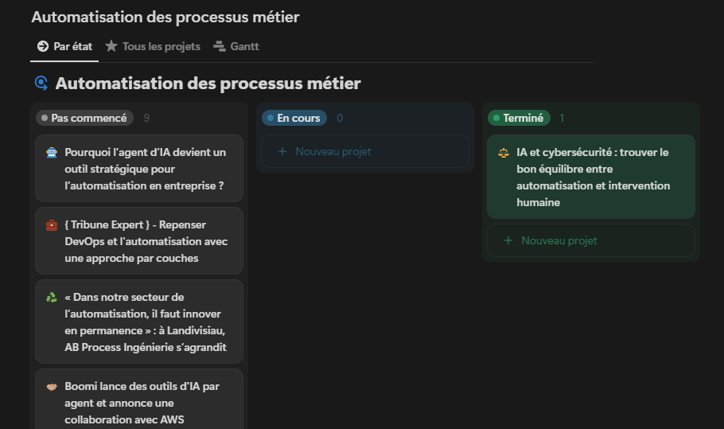
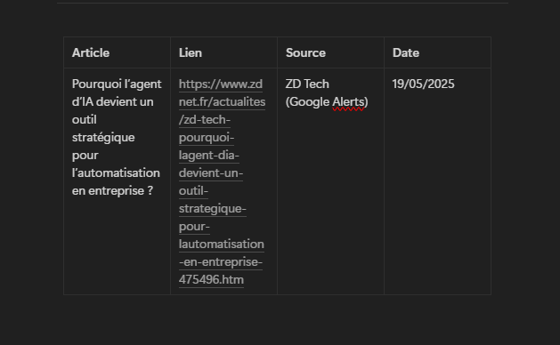

Comment je fais ma veille
Pour organiser ma veille technologique, j'utilise Google Alert, que j'ai paramétré avec plusieurs mots-clés pertinents pour mon domaine :
- automatisation + entreprise
- automatisation des processus métier
- BPM tools
- Business Process Automation
- hyperautomation
- robotic process automation
- workflow automation
J'ai créé un compte Google dédié uniquement à la réception de ces alertes pour garder mes mails bien organisés et éviter le bruit.
Chaque jour, je récupère les articles reçus dans ces alertes et je les classe dans un tableau sur l'application Notion. Ce tableau comprend :
- Les articles reçus
- Ceux que je garde pour approfondir
- Ceux que je décide de ne pas conserver


Ensuite, chaque semaine, je sélectionne un article pertinent parmi ceux que j'ai conservés et je l'intègre dans ma veille technologique officielle.
Cette méthode me permet de rester à jour efficacement sans être submergé par trop d'informations, tout en gardant une organisation claire et structurée.
← Retour à la veille